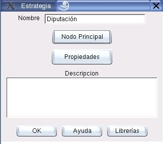

Edición de Metodologías
La figura 3.1 muestra el cuadro de diálogo de edición de Metodologías. Para acceder a él se deben seleccionar las opciones del Menú:
Proyecto  Metodología
Metodología
Téngase en cuenta que la Metodología que se editará será aquella que esté previamente seleccionada en el Proyecto. Para cambiar la selección puede usarse el listado de la Barra de Herramientas, o el cuadro de diálogo de edición de proyectos (Ver sección 2.1)
Los principales componentes de este cuadro de diálogo se explican a continuación:
- Nombre:
- Este es el nombre que identificará a la Metodología; debe ser único.
- Nodo Principal:
- Con esta opción se puede editar el Nodo Principal de la Red, y a través de él a todos los demás nodos (Ver sección 5.1).
- Propiedades:
- El usuario puede asignar un listado de propiedades y sus respectivos valores a la metodología (Ver sección 10.4).
- Descripción:
- El usuario puede incluir un texto descriptivo de la Metodología.
Figura 3.1:
Diálogo para edición de Metodologías
|

|
Oscar Duarte
2005-10-17